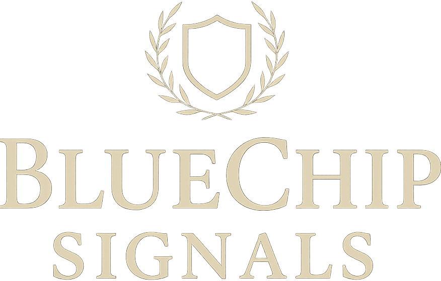
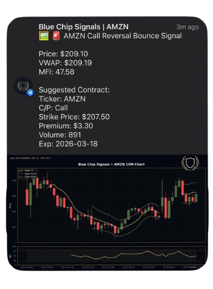

Due DiligenceAlgorithmic Options Alerts,
built for clarity.
Structured trade alerts on the most liquid large-cap names, delivered to Telegram with defined entries, defined risk, and zero ambiguity.
What Blue Chip Signals Is
Blue Chip Signals is a premium algorithmic alert service that identifies options setups on highly liquid large-cap tickers (SPY, TSLA, META, NVDA, AAPL, and AMZN) and delivers them to Telegram with clearly defined entries, contract details, and risk parameters.
Each alert is generated by a rules-based strategy developed and maintained by a single founder. This is a decision-support tool for self-directed traders who want more structure and less noise. It is not financial advice, not a managed account, and not a guarantee of returns.
Built For
Self-directed options traders who want defined entries, structured risk, and real-time delivery on names with deep liquidity, without ambiguity or guesswork.
Not Built For
Anyone seeking guaranteed profits, a shortcut around personal research, or a service that replaces independent judgment. If you are not comfortable with the inherent risks of options trading, this service is not appropriate.
How It Works
Subscribe and Connect
After onboarding, you receive access to the private Blue Chip Signals Telegram channel. All alerts are delivered here in real time.
Receive Structured Alerts
Each alert includes the ticker, direction, contract details (strike, expiration, premium), entry context, and a supporting chart. The format is consistent and designed for immediate readability.
Execute at Your Discretion
You evaluate each alert independently, manage your own position sizing, and execute through your own brokerage. You are in full control at all times.
What Members Receive

Anatomy of a Live Alert
Every alert follows a standardized format: ticker identification, current price relative to VWAP, momentum indicators, and a suggested contract with strike, premium, volume, and expiration, accompanied by a branded chart for visual context.
There are no vague calls to action. No ambiguous commentary. Each alert is structured so you can evaluate the setup and make a decision in seconds.
Large-Cap Liquidity
Coverage restricted to SPY, TSLA, META, NVDA, AAPL, and AMZN. Deep options chains, tighter spreads, more efficient execution.
Defined Entry and Risk
Every alert specifies entry context, strike, premium, and expiration. Risk framing is built into the format, not treated as an afterthought.
Telegram Delivery
Push notifications the moment an alert fires. No dashboards to check, no emails to wait for. Mobile-first, immediate delivery.
Chart Context
Each alert includes a branded 10-minute chart with VWAP bands and MFI readings, providing technical context alongside the trade idea.
Consistent Format
Alerts follow a uniform structure across every ticker. You develop pattern recognition, not confusion.
One Source, No Noise
A single, focused signal channel. No chatroom debates, no conflicting opinions, no entertainment disguised as analysis.
One Person. One Vision.
Blue Chip Signals was built entirely by one person, from strategy development to platform engineering. No committee, no fluff, just a trader who built exactly what he wished existed.

An athlete at heart with a will to win, Hamza was first introduced to investing at 17 when his high school history teacher ran a paper trading competition. He placed 6th. That didn't sit well with him. What started as a competitive itch became a 10+ year journey into the underlying mechanics of the market.
A year after that first introduction, he discovered options trading. After losing over $20,000 and watching his long-term portfolio underperform, he realized the problem wasn't the market. It was time, leverage, and the absence of a system. Between work and college, he couldn't sit and watch charts all day. So he dropped out and taught himself to code.
It took two years to build the first version of what would become Blue Chip Signals. After showing it to friends and family, they pushed him to turn it into a product. That was never the plan, but life has a way of handing you lemonade when you're holding strawberries. He spent the next several years refining the signal logic with real traders in mind, not just himself, and that is when the real Blue Chip Signals was born.
Every signal, every feature, and every line of code traces back to one person with a clear vision: the student athlete turned self-taught coder and trader.
Alert Methodology Framework
Transparency about how we evaluate our own alerts is just as important as the alerts themselves. This section explains the framework we use to track outcomes, so you know what we measure and what we do not claim.
Every alert is logged at the time of publication with a timestamp, entry price, and contract details. We track whether the suggested contract reached a predefined profit target or hit a loss threshold within the relevant timeframe.
We do not retroactively edit alerts or selectively report winners. The log is cumulative. We track all published alerts, not a curated subset.
What We Track
Entry time, alert price, contract details, whether the position reached its target or stop level, and the timeframe in which the outcome occurred. All data is based on the published alert, not on hypothetical optimizations.
What We Do Not Claim
We do not guarantee that members executed at the published price. Slippage, timing, and individual execution vary. Our tracking reflects the alert as published, not any individual member's results.
Why This Matters
A methodology framework holds us accountable to a consistent standard. If we share performance context in the future, this is the basis on which it will be measured. No cherry-picking, no hindsight adjustments.
An Honest Assessment of Where We Stand
If you are evaluating Blue Chip Signals for the first time, you may not find a long trail of third-party reviews, press coverage, or years of documented history. We prefer to address this directly rather than obscure it.
Blue Chip Signals is a developing brand built by a sole founder. Our public footprint is growing intentionally. We prioritize service quality over marketing volume.
In the interim, we earn trust through the quality of our alerts, the consistency of our process, our willingness to take a demo call and answer questions directly, and our refusal to fabricate social proof.
We would rather have zero reviews than fake ones.
What We Can Show You
A live demo of the alert format, the strategy framework, the Telegram channel structure, and direct conversation with the founder.
What Is In Development
Third-party review platform profiles, member testimonials with proper attribution, and performance methodology documentation.
What We Will Not Do
Fabricate testimonials, purchase reviews, inflate credentials, or make performance claims we cannot support with transparent methodology.
Due Diligence FAQ
The subscription reflects the cost of proprietary algorithmic infrastructure, exclusive focus on large-cap liquidity, structured alert formatting, and a premium service experience. We recommend a demo call where you can see the alert format, ask questions, and decide whether the service aligns with your trading approach before committing.
This page is our primary due diligence resource. We also invite every prospective member to book a demo call where you can speak directly with the founder, see the alert format in detail, and ask anything not addressed here.
We are a focused, founder-led service that has prioritized building a quality product over building a media presence. We address the resulting trust gap by making the founder directly accessible via demo call and by being straightforward about where we are in our growth.
Review infrastructure is being established. We are building social proof authentically rather than purchasing or fabricating it. As member feedback becomes available with proper attribution, it will be published through appropriate channels.
That depends entirely on your trading volume, your approach, and your expectations. A premium subscription should feel justified by the value it provides, not by pressure. We do not use urgency tactics, artificial scarcity, or countdown timers.
Options trading involves real financial risk, including the possibility of total loss on any individual position. Blue Chip Signals does not guarantee profitability. Every trade you place is your own decision, executed with your own capital. No signal service can eliminate the risk of loss. Please review the Risk Disclosure section and only trade with capital you are prepared to lose.
Core coverage includes SPY, TSLA, META, NVDA, AAPL, and AMZN. Additional tickers may be included selectively when they meet our liquidity and volume thresholds. We do not cover penny stocks, micro-caps, or thinly traded options.
Alerts are generated by a rules-based algorithmic strategy developed by the founder. When a qualifying setup is identified, an alert is published to the private Telegram channel in real time with standardized formatting: ticker, price/VWAP context, momentum data, suggested contract, and a supporting chart.
No. Blue Chip Signals provides algorithmic trade alert ideas for informational purposes. It is not financial advice, investment advice, or a recommendation to buy or sell any security. All trading decisions are yours.
Yes. We offer a demo call where the founder walks you through the platform, the alert format, and the strategy framework. This allows you to evaluate the service firsthand before making a financial commitment.
No. This is strictly an alert service. We do not manage capital, access your brokerage account, or place trades on your behalf. You maintain full control of your execution and risk management at all times.
What Qualifies and What Does Not
Blue Chip Signals evaluates refund requests on a case-by-case basis. We want every member to feel confident in their subscription, and we handle disputes fairly and transparently.
If you experience a verifiable service disruption (for example, you do not receive any alerts during your first week due to a backend or delivery issue on our end), that may constitute a justifiable reason for a refund. We take delivery reliability seriously, and technical failures that prevent you from receiving the product you paid for are treated accordingly.
However, dissatisfaction with the content, frequency, or outcome of alerts does not constitute grounds for a refund. Trading results vary, and the service delivers information, not guaranteed outcomes. A signal you disagree with or a trade that does not go your way is not a service failure.
May Qualify
Backend delivery failures, extended service outages, inability to access the Telegram channel due to a technical issue on our end, or billing errors. Each situation is reviewed individually.
Does Not Qualify
Dissatisfaction with alert frequency, disagreement with trade direction, losses on positions you chose to enter, or a change of mind about the subscription after receiving access.
Full Policy
For the complete refund and cancellation policy, including dispute procedures and applicable timeframes, please visit our Legal Hub.
Important Information
Options trading involves substantial risk and is not appropriate for all investors. You can lose some or all of your invested capital on any individual trade. Past performance of any alert, whether shared or implied, is not an indicator or guarantee of future results.
Blue Chip Signals provides algorithmic trade alert ideas for informational and educational purposes only. Alerts are not personalized investment advice and should not be treated as instructions to trade. Every alert represents a trade idea, not a directive.
You are solely responsible for evaluating each alert, determining its suitability for your financial situation and risk tolerance, and managing your own positions. Blue Chip Signals has no knowledge of your financial circumstances, objectives, or risk capacity.
Do not trade with capital you cannot afford to lose. Do not treat any signal service, including this one, as a substitute for independent due diligence and professional financial guidance.
By subscribing, you acknowledge that you understand the risks inherent in options trading and accept full responsibility for your own trading decisions and outcomes.
This risk disclosure is a working draft. It has not been reviewed by legal counsel. Blue Chip Signals intends to have this language reviewed by a qualified professional.
Blue Chip Signals operates from the United States. This service is not intended for residents of jurisdictions where options trading or the provision of trade alert services is restricted or prohibited. Users are responsible for ensuring compliance with applicable local laws and regulations. Nothing on this page constitutes an offer or solicitation in any jurisdiction where such offer or solicitation would be unlawful.
Evaluate the Service Directly
Book a demo with the founder. No sales pressure, no urgency tactics. A direct conversation about the service, the methodology, and whether Blue Chip Signals is the right fit for your trading.